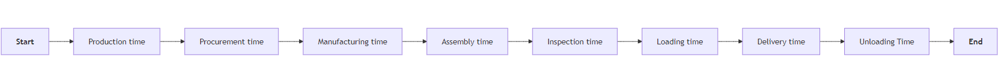
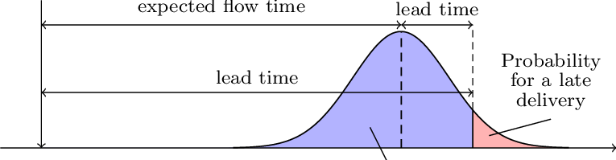
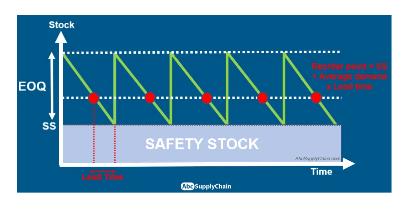

1 Khi nào xây dựng MRP?:
Sau khi bạn học về MRP, bạn sẽ cảm thấy rằng việc tính toán và xây dựng kế hoạch MRP chỉ là vấn đề về thời gian, hoàn toàn dễ tính toán (vì chỉ có cộng trừ nhân chia). Vậy câu hỏi quan trọng nhất chính là “Khi nào bạn cần xây dựng kế hoạch và bắt đầu đặt hàng từ nhà cung ứng ?”.
Việc xác định khi nào đòi hỏi 2 yếu tố: thời điểm và điều kiện kích hoạt. Thời điểm đơn giản chính là thời gian chính xác để xây dựng MRP và gửi đơn đặt hàng. Điều kiện kích hoạt nghĩa các tiêu chí cần đạt để chấp nhập yêu cầu cần xây dựng MRP và dựa vào đó để chọn thời điểm phù hợp. Và để xác định chúng, ta cần tính toán 2 nhân tố là: Leadtime và Reorder point.
1.1 Lead time:
1.1.1 Phương pháp tính:
Về Leadtime sẽ có nhiều cách tính toán và điều này tùy thuộc vào nhà cung ứng của bạn thuộc mô hình doanh nghiệp gì hoặc hợp đồng giữa công ty bạn và nhà cung ứng. Ví dụ bạn làm việc với nhà cung cấp thì thông thường họ sẽ lo luôn hoạt động vận tải và bốc xếp dỡ hàng lên xuống vào kho của bạn và bạn chỉ cần thanh toán các khoảng phí đó. Nhưng nếu bạn tự thuê xe riêng đế tới kho của họ bốc hàng, bạn cần tính toán thêm về chi phí và thời gian vận tải - Transportation time và thời gian bốc xếp - Unloading/Loading time.
Về tổng quan, các thành phần cơ bản trong công thức tính Leadtime sẽ gồm:

Mình có thể chia thành các dạng doanh nghiệp và mỗi doanh nghiệp thì sẽ cần tính toán leadtime như thế nào dưới đây:
Việc xác định leadtime quan trọng vì nó là tham số để tính safety stock như công thức dưới đây. Đây là công thức tổng quan nhất về Safety stock nhưng có nhiều nghiên cứu gần đây cũng đưa ra các công thức khác để nâng cao hiệu quả trong quản lí chuỗi cung ứng.
1.1.2 Safety leadtime là gì?:
Ngoài ra, còn có khái niệm về Safety leadtime được (Hariharan and Paul Zipkin, n.d.) định nghĩa là: “the difference between the release time and the due date minus the supply lead time of the product, where supply lead time is defined as the time that is required to produce the order”, được hiểu đơn giản là thời điểm nhằm đảm bảo quá trình được diễn ra suôn sẻ.
Safety leadtime có thể được lựa chọn làm tiêu chí thay thế cho Safety stock hoặc thậm chí được ưu tiên với điều kiện dự báo về nhu cầu phải có độ chính xác cao. Số lượng hàng tồn kho an toàn cần thiết hoặc độ dài của safety leadtime bị ảnh hưởng bởi mức độ của uncertainty mà một đơn vị sản xuất gặp phải.

1.2 Safety Stock:
Trước khi nói về reorder point, mình sẽ giải thích sơ về safety stock cho những bạn nào chưa hiểu về khái niệm này.
1.2.1 Định nghĩa:
Safety stock hay còn gọi là tồn kho an toàn được định nghĩa là một lượng hàng hóa dự trữ thêm nhằm đảm bảo rằng doanh nghiệp có thể đáp ứng nhu cầu của khách hàng ngay cả khi có sự biến động trong nhu cầu hoặc thời gian giao hàng. Công thức tính là:
\[ \text{Safety Stock} = \text{Service Level Factor} \times \sqrt{\text{Lead Time}} \times \sigma \]

Như hình mô tả bên trên từ (Edouard Thieuleux 2022), bạn sẽ thấy rằng reorder point sẽ luôn cao hơn safety stock bởi vì safety stock là 1 thành phần trong công thức tính reorder point. Ngoài ra, cả hai có điểm khác biệt ở mục đích sử dụng, trong đó:
Mục đích của việc duy trì tồn kho an toàn là để giảm thiểu rủi ro outstock khi đối mặt với vấn đề về supply/demand uncertainty - sự biến động không lường trước được. Ngoài ra, việc đảm bảo 1 lượng safety stock cũng giúp quy trình hoạt động không bị gián đoạn và giữ chân khách hàng. Hiểu một cách đơn giản, giả sử safety stock của bạn là mức 300 món hàng thì khi lượng hàng trong kho của bạn giảm xuống mức 300 là bạn phải đặt thêm hàng từ nhà cung ứng cho dù không có đơn hàng đặt từ khách hàng.
Mục đích của điểm đặt hàng là nhằm đảm bảo sẽ cung cấp đủ hàng trong 1 khoảng thời gian cụ thể trong tương lai. Khi lượng hàng chạm đến một lượng cụ thể thì bạn cần phải lên các yêu cầu đặt hàng, mua hàng từ các nhà cung ứng.
1.3 Reorder point:
Về reorder point được định nghĩa là điểm đặt hàng lại trong quản lý tồn kho, giúp xác định thời điểm cần đặt hàng thêm hàng hóa để tránh tình trạng hết hàng. ROP được tính dựa trên nhu cầu tiêu thụ hàng hóa trong một khoảng thời gian nhất định và thời gian giao hàng từ nhà cung cấp.
Công thức đơn giản là:
\[ ROP = \text{Average demand/day} \times \text{Lead time (days)} + \text{Safety stock} \]
Vậy dựa vào các kiến thức mình vừa đưa ra, chúng ta sẽ bắt đầu xây dựng kế hoạch MRP ở trang Practice in R
References
Edouard Thieuleux. 2022. “Safety Stock Formula & Calculation: The 6 Best Methods.” https://abcsupplychain.com/safety-stock-formula-calculation/.
Hariharan, Rema, and Paul Zipkin. n.d. “Customer-Order Information, Leadtimes, and Inventories.” Management Science Vol. 41, No. 10 (1995): 1599–1607.